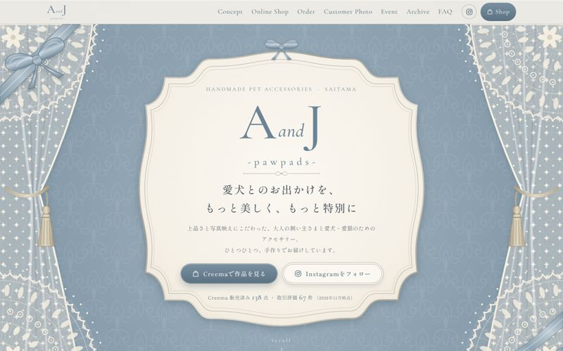
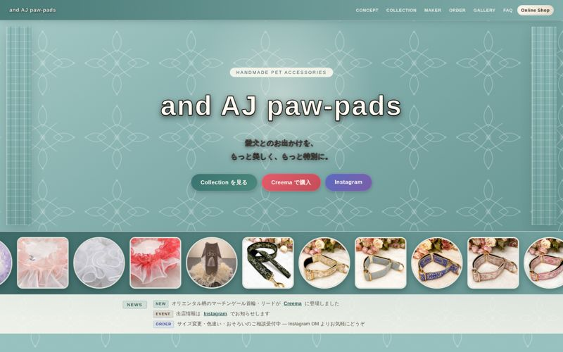
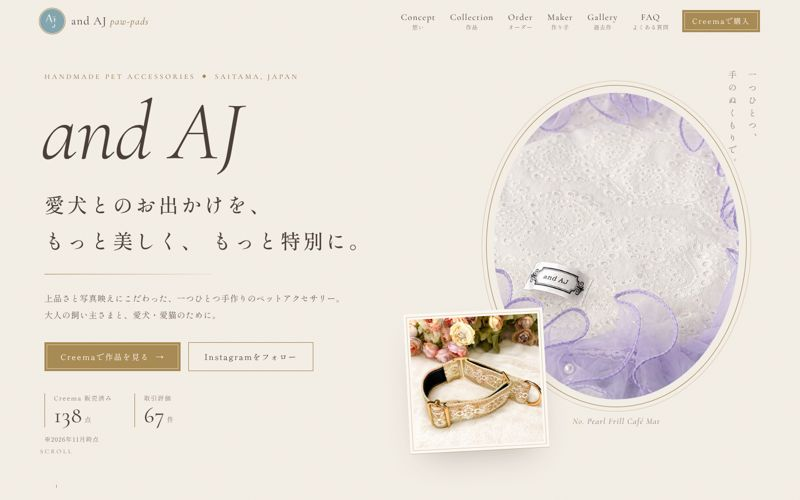
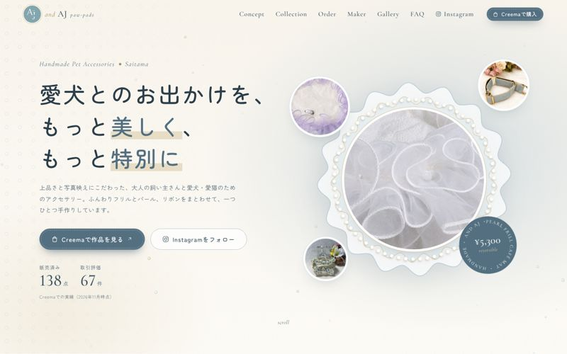
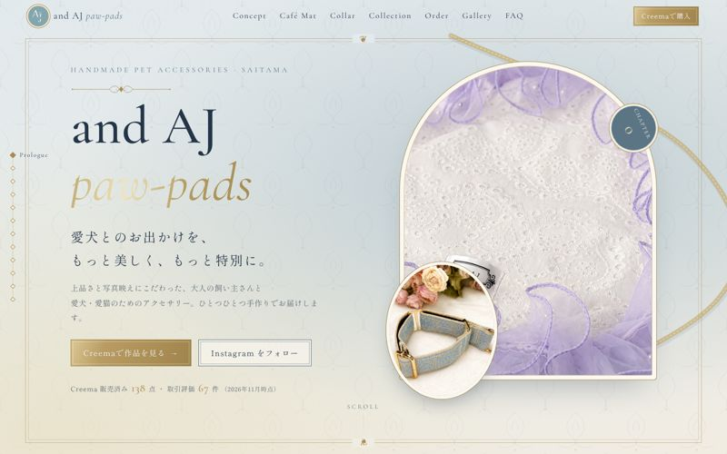

デザイン案の比較
ご回答いただいた「アンティーク調のくすみカラー」「アンティーク・クラシック／大人可愛い」「主役はカフェマットとケープ」に沿った5案です。カードを開くと実際に動くサイトが見られます。

D ／ くすみブルー × レース
レース・ブルー
ご提示いただいたイメージに合わせた案。レースの角飾り、サテンリボン、飾り縁プレート。Instagram／Customer Photo／Online Shop／Event の4枚タイル。
サイトを開く →

BASE ／ くすみティール
ジャカード・ティール
既存サイトを土台にした案。ロゴと同じ青緑、ジャカード柄のリボン装飾。商品一覧・カテゴリ切替・写真が流れる帯を追加。
サイトを開く →

A ／ グレージュ × ゴールド
アンティーク・クラシック
洋書の扉ページのような額縁と飾り罫。雑誌風の広い余白、横に流れるコレクション。
サイトを開く →

B ／ くすみブルー
大人可愛い
フリルやスカラップ、リボンのモチーフ。丸い写真がふわりと浮かび、やわらかく弾む動き。
サイトを開く →

C ／ くすみブルー
アンティーク・ストーリー
章立てでスクロールすると物語が進む構成。リボンがページを縫い、マットの色が切り替わる。
サイトを開く →